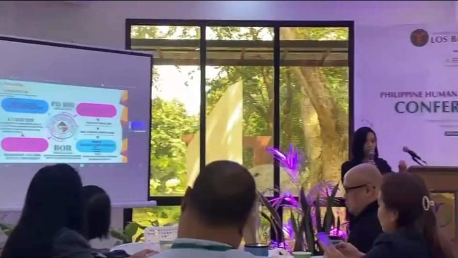

📷 Photo by Rhea L. Adriatico
NVSU-CHE Joins Philippine Human Ecology Consortium
Dean Rhea L. Adriatico, representing Nueva Vizcaya State University's College of Human Ecology (NVSU-CHE), led a delegation to the Philippine Human Ecology Consortium Conference held at the University of the Philippines Los Baños (UPLB) Sculpture Garden from September 30 to October 2, 2024. Accompanying Dean Adriatico were two senior faculty members from NVSU-CHE, Dr. Lourdes T. Capua and Dr. Maria Teresa A. Fulgencio.
During the conference, Dean Adriatico delivered a presentation highlighting NVSU-CHE's unique approach to human ecology education.
She discussed the college's conceptualization and implementation of the program, as well as its vision for strengthening human ecology programs and outlining future directions for the field.
A keynote address was delivered by Dr. Robert Adam Dyball, a renowned human ecology expert from the Australian National University. Dr. Dyball provided valuable insights into the discipline and facilitated a workshop on introducing human ecology courses.
On behalf of NVSU President, Dean Adriatico participated in a ceremonial signing of a Memorandum of Understanding (MOU) between UPLB and the Human Ecology Institute of the Philippines (HUMEIN) Philippines Inc., along with Marinduque State University, Palawan State University, University of Southern Mindanao and Central Mindanao State University. This collaboration aims to strengthen human ecology education and research in the Philippines.
In addition to attending the conference, the NVSU-CHE delegation conducted a benchmarking activity and visited the UPLB Institute of Food Science and Technology, Food Processing Innovation Center. This provided valuable opportunities for learning and collaboration.